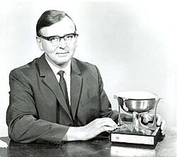

Jim Wilkinson | |
|---|---|
 Jim Wilkinson with his Turing Award | |
| Born | James Hardy Wilkinson 27 September 1919 Strood, England |
| Died | 5 October 1986 (aged 67) Teddington, England |
| Education | Trinity College, Cambridge (BA) |
| Known for | |
| Awards |
|
| Scientific career | |
| Fields | Numerical Analysis Numerical linear algebra |
| Institutions | National Physical Laboratory[2] |
James Hardy Wilkinson FRS[1] (27 September 1919 – 5 October 1986) was a prominent figure in the field of numerical analysis, a field at the boundary of applied mathematics and computer science particularly useful to physics and engineering.[3][4][5] In 1970 he won the ACM Turing Award.
Born in Strood, England, he won a Foundation Scholarship to Sir Joseph Williamson's Mathematical School in Rochester.[6] He studied the Cambridge Mathematical Tripos at Trinity College, Cambridge, where he graduated as Senior Wrangler.[7]
Taking up war work in 1940, he began working on ballistics but transferred to the National Physical Laboratory[2] in 1946, where he worked with Alan Turing on the ACE[8] computer project. Later, Wilkinson's interests took him into the numerical analysis field, where he discovered many significant algorithms.
Wilkinson received the Turing Award in 1970 "for his research in numerical analysis to facilitate the use of the high-speed digital computer, having received special recognition for his work in computations in linear algebra and 'backward' error analysis." In the same year, he also gave the Society for Industrial and Applied Mathematics (SIAM) John von Neumann Lecture.
Wilkinson also received an Honorary Doctorate from Heriot-Watt University in 1973.[9]
He was elected as a Distinguished Fellow of the British Computer Society in 1974 for his pioneering work in computer science.
The James H. Wilkinson Prize in Numerical Analysis and Scientific Computing, established in 1982 by SIAM, and J. H. Wilkinson Prize for Numerical Software, established in 1991, are named in his honour.
In 1987, Wilkinson won the Chauvenet Prize of the Mathematical Association of America, for his paper "The Perfidious Polynomial".[10]
Wilkinson married Heather Ware in 1945. He died at home of a heart attack on 5 October 1986. His wife and their son survived him, a daughter having predeceased him.
{kind=link}